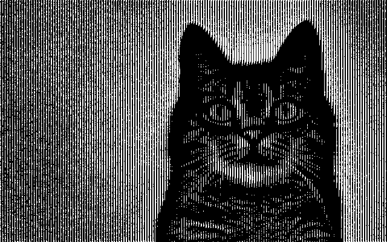
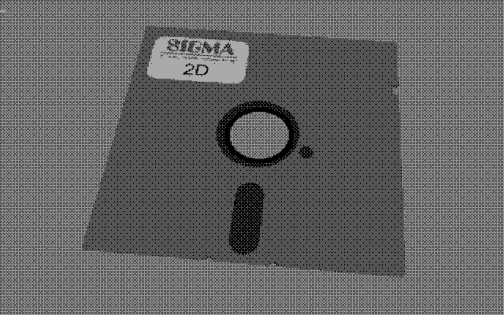
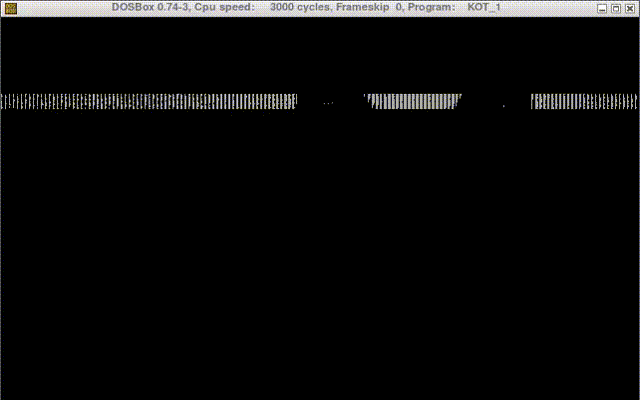
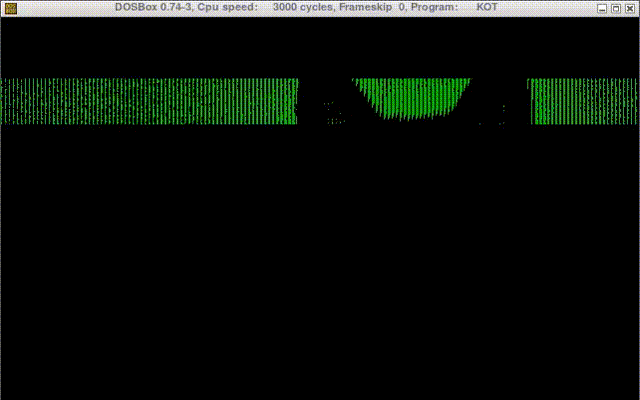
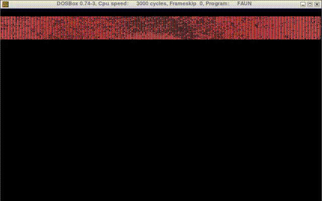
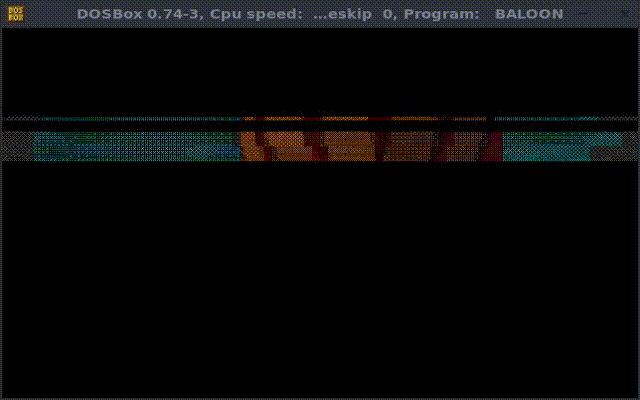

updated at 2021-02-16 by wojtek at bitologia.org (index)
0x03 (80x25) text modeTOC
Standard DOS text mode contains 2000 = 80×25 characters on the screen, while the (extended) ASCII set comprises of only 256 different characters. Thus, one has to significantly simplify an image to be reconstructed with such limited typographical resources.
Possible procedure (should be easily rewritten in a batch mode) in GIMP:
Instead of engraving, one can use 1-bit palette with appropriate dithering - no rules, just experiment!
Sanity check: the output must have exactly 768000 = 3×640×400 bytes and might look like this:
00000000 FF FF FF 00 00 00 00 00 00 FF FF FF 00 00 00 00 00 00 FF FF FF 00 00 00 00000018 00 00 00 FF FF FF 00 00 00 00 00 00 FF FF FF 00 00 00 00 00 00 FF FF FF 00000030 00 00 00 00 00 00 FF FF FF 00 00 00 00 00 00 FF FF FF 00 00 00 00 00 00 : : 000BB7E8 00 00 00 00 00 00 00 00 00 00 00 00 00 00 00 00 00 00 00 00 00 00 00 00
where each consecutive triplet of bytes, eg. FF FF FF, corresponds to the RGB pattern - here monochromatic. Such sequence, after pixel by pixel RGB decoding onto 640×400 array, reveals a 1-bit color picture:

More samples here, here, here, and here.
Picture is rotated before engraving because vertical strips (GIMP's engravings are done only horizontally) fit much better for the final effect when graphics is replaced by text. Namely, the VGA standard displays characters with a slight horizonal break between each column. That is why vertical stripes might obscure this nuisance. Besides, it looks much better than horizontal ones.
Once image is converted into the *.data file,
use the shell C function:
data_reduce24(), the purpose of which is:
The size of the last output from the script is 32000 bytes that is 2000×16 numbers. This is in agreement with the image size 640×400 that corresponds to 2000 subarrays of size 16×8 which are just ASCII matrices. Actually, the resolution in the text mode reads 720×400 not 640×400. The additional 80 pixels comes from the method the VGA standard works: after each character an additional 1-pixel-width line is drawn. With one exception; ASCII table has a sequence of special sixteen characters between C0h and DFh. When displayed in the text mode, they reproduce their last pixel column (only set bits) that results with a ninth one that overlays the background (making the text a sort of continuous, which can produce a nice effect when preparing frames, array, etc.). This "feature" can be handled by the port 03Ch of VGA, see the article of Martin Weisman in PC Mag (1990-01-30).
A simple formula:
80*16*(y - 1) + x + 80*j for j in [0, 15]
can be used to retrieve a byte mask from the reduced array at the (x, y)-position for x in [1, 80] and y in [1, 25].
Indexing example:
| x=1 | 2 | 3 | ... | 30 | ... | 80 | |
| y=1 | □ | □ | □ | ... | □ | ... | 80 : 1280 |
| 2 | □ | □ | □ | ... | □ | ... | □ |
| 3 | □ | □ | □ | ... | □ | ... | □ |
| 4 | □ | □ | 3841 : 5043 | ... | □ | ... | □ |
| : | : | : | : | ... | □ | ... | : |
| 17 | □ | □ | □ | ... | □ | ... | □ |
| : | : | : | : | ... | □ | ... | : |
| 25 | □ | □ | □ | ... | □ | ... | 30800 : 32000 |
The C function checks whether there is a possibility to reconstruct the image out of 256 different ASCII characters or not, and creates an assembly data section, eg.
NEW_ASCII DB 10, 43, 43, 213, 40, 43, 12, 40, 30, 20, 20, 120, 140, 104, 50, 10 ; char 1
DB 10, 30, 10, 30, 102, 120, 30, 10, 10, 10, 30, 0, 0, 10, 10, 0 ; char 2
:
if it is the case.
Actually, the input picture should not be much complicated to be presented using just 256 different characters.
The following text-picture

has been prepared from 250 different ASCII characters (see the cursor in the upper-left...). However, for most images the procedure of converting to the full ASCII table is rather impossible. This problem can be solved using different display methods.
The improved procedure reproduces all the above steps with a slight difference that there is no limitation for ASCII characters.
Every (8×16)-component "line" of the input picture is translated to a set of 80 ASCII characters. There are 25 such lines in total. Assembly script redefines a sequence of the first 80 ASCII characters, displays them and immediately erases. Then it redefines next 80 characters, displays them... and repeats the procedure for each of 25 lines. Adjusting the speed of jump between each line, one can observe a smooth effect of flowing the picture which resembles old CRT monitors being refreshed when filmed on camera. As a result one gets:

It is enough to increase the number of characters displayed in one turn from 80d to 240d (three lines) to get a much better visual effect:


As a side project, this can be used to prepare a simple animation over three lines.
Another modification - horizontal lines.
ASCII attributes can be adjusted to reveal a colour of the individual "pixel" ≡ ASCII. An original image rescaled to 80×25 with 16 colours and exported as *.data serves a (real) pixel to ASCII-attribute (1-to-1) mapping. Then, the GIMP procedure remains as as above with the same picture of original size 640×400 (1-bit-dithering...). Not every picture fits for this. One must try to pick ones that represent a single well-contrasted object which is properly distinguished from the uniform background.
Standard VGA offers 16 colours:
unsigned char VGA_color[16][3] = {
{0x00, 0x00, 0x00}, // 0 black
{0x00, 0x00, 0x80}, // 1 navy
{0x00, 0x80, 0x00}, // 2 green
{0x00, 0x80, 0x80}, // 3 teal
{0x80, 0x00, 0x00}, // 4 maroon
{0x80, 0x00, 0x80}, // 5 purple
{0x80, 0x80, 0x00}, // 6 olive
{0xc0, 0xc0, 0xc0}, // 7 silver
{0x80, 0x80, 0x80}, // 8 gray
{0x00, 0x00, 0xff}, // 9 blue
{0x00, 0xff, 0x00}, // 10 lime
{0x00, 0xff, 0xff}, // 11 aqua/cyan
{0xff, 0x00, 0x00}, // 12 red
{0xff, 0x00, 0xff}, // 13 fuchsia/magenta
{0xff, 0xff, 0x00}, // 14 yellow
{0xff, 0xff, 0xff} // 15 white
};
which can be neatly visalised on the RGB cube below:
Having this it is easy to cast any (R, G, B) triplet to the nearest color using a standard Euclidean distance μ restricted to the cube:
μ : [0, 255]3 ∋ (R, G, B) → minj{√((R-VGAj[0])2+(G-VGAj[1])2+(B-VGAj[2])2)} ∈ {c0, ..., c15}
Since 'min' function is not unique, the resulting palette does not look the best... The result is:

Final modification uses mouse as a tool to show a clip of the screen of size 16×16=256 (full set) characters.
ASCII.CORE
$ gcc -Werror -o ASCII ASCII.c $ ./ASCII ASCII_image_08.data FLOPPY.ASM --> reduce GIMP RAW DATA file to a binary form... done --> prepare new ASCII table...................... done --> it is 250 different ASCII characters to be redefined ---------------------- - OK - ---------------------- ...
$ ./ASCII ASCII_image_01.data KOT.ASM --> reduce GIMP RAW DATA file to a binary form... done --> prepare new ASCII table...................... done --> it is 1751 different ASCII characters to be redefined ---------------------- - FAIL - ----------------------
ASCII_F.CORE_1 or
ASCII_F.CORE_3
$ gcc -Werror -o ASCII_F ASCII_F.c $ ./ASCII_F ASCII_image_01.data KOT_3.ASM #L # where #L = 1 or 3 = number of lines to be displayed at once : C:/> TASM KOT_3 || TLINK /T KOT_3 || KOT_3.COM
ASCII_FH.CORE
$ gcc -Werror -o ASCII_FH ASCII_FH.c $ ./ASCII_FH .data FAUN_3H.ASM
ASCII_FC.CORE
$ gcc -Werror -o ASCII_FC ASCII_FC.c -lm $ ./ASCII_FC <file>.data <file>_c.data OUT.ASM :
ASCII_FM.CORE
$ gcc -Werror -o ASCII_FM ASCII_FM.c $ ./ASCII_FM <file>.data OUT.ASM :
ASCII_FMC.CORE
$ gcc -Werror -o ASCII_FMC ASCII_FMC.c $ ./ASCII_FMC <file>.data <file>_c.dataOUT.ASM :
{kind=link}
{kind=link}
{kind=link}
{kind=link}